Evening Dining Orchestrated to the Rhythm of Dusk
Experience multi-course dinner tasting menus engineered to harmonize with fading daylight, warm candlelight luminance, and restorative evening commensality.
Where Daylight Fades and Gastronomy Awakens
Twilight is not merely a marker of time; it is a psychological threshold. As the amber rays of dusk yield to indigo twilight, sensory perception deepens, conversational rhythms soften, and the dinner table becomes an intimate sanctuary.
-
•
Circadian Flavor Progression: Menus transition from mineral-bright botanical openers to deep, umami-rich braised courses as twilight deepens.
-
•
Warm Candlelit Luminance: Dining spaces calibrated to 2,200 Kelvin amber glow, reducing eye strain and heightening tactile dining intimacy.
-
•
Zero-Proof Botanical Elixirs: Artfully paired sparkling verjus spritzers, cold-pressed pear nectar, and steeped mountain herbs.
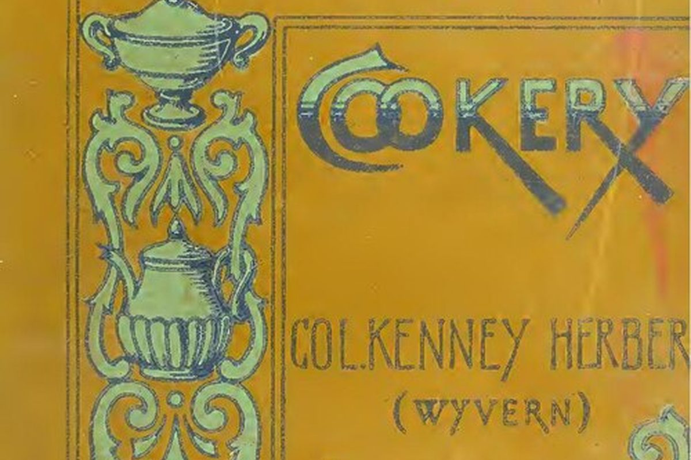
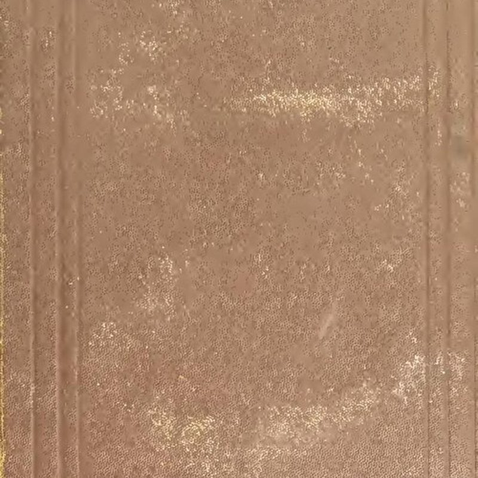
The Digestive Rhythm of the Evening Table
As twilight approaches, human gastrointestinal motility and insulin sensitivities shift toward restorative nighttime repair. Heavy, flash-fried or excessively salted foods shock the digestive tract, fragmenting sleep architecture.
Our culinary team structures each evening course around gentle bioavailability: slow-simmered broths, natural amino acids, enzymatically softened botanical fibers, and moderate glycemic carbohydrates that promote natural melatonin synthesis without post-dinner heaviness.
Inquire About Dietary ArchitecturePlating for the Amber Spectrum
Dishes engineered specifically to capture candlelight reflection, contrasting deep savory textures against hand-glazed ceramic stoneware.
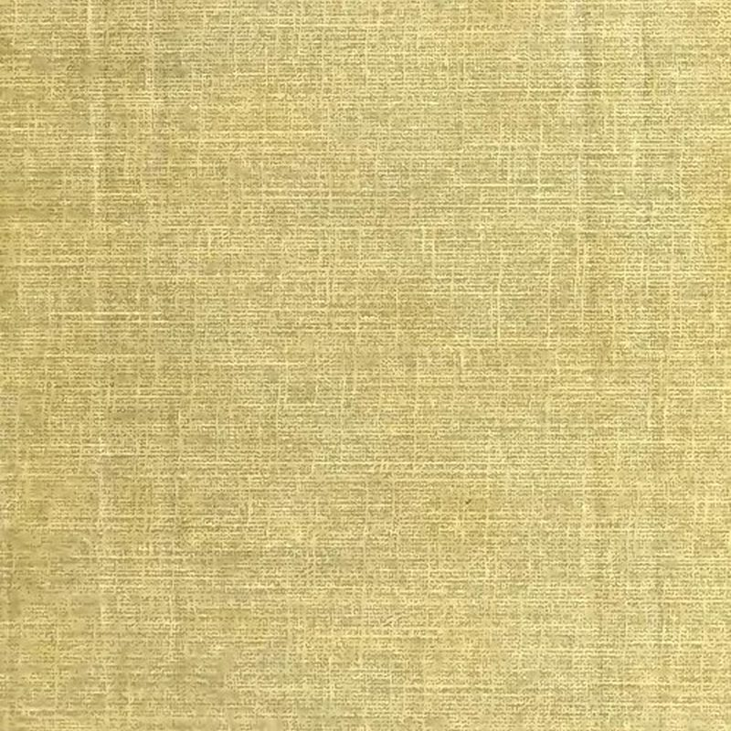
Act I: The Radiant Crudo
Thinly sliced coastal fish paired with winter citrus, pressed yuzu verjus, and sea fennel leaves that awaken the palate under early dusk light.
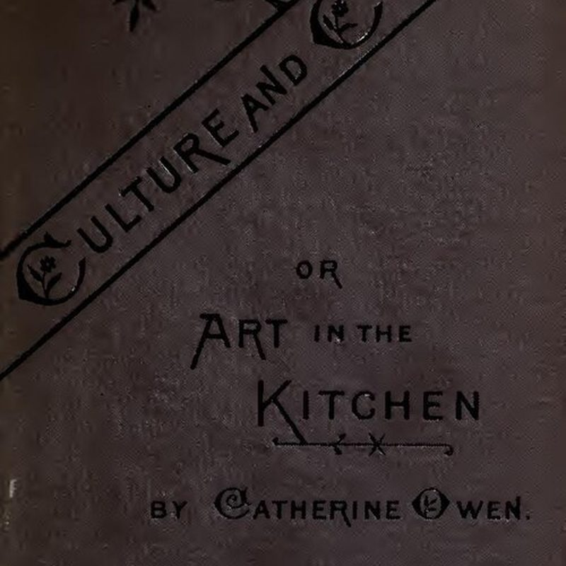
Act II: The Ember-Charred Hearth
Wild forest mushrooms and heirloom parsnips roasted over seasoned hickory coals, served with reduced elderberry glaze on warm slate platters.
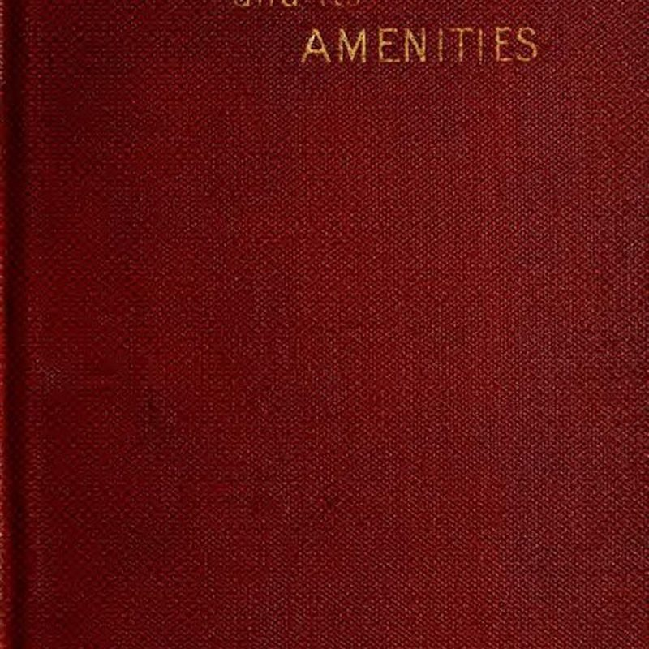
Act III: The Shared Centerpiece
An expansive communal braising dish passed hand-to-hand among seated diners, reinforcing the timeless warmth of shared table hospitality.
The Four Pillars of Twilight Hospitality
Every element of our dining room environment is calibrated to slow the passage of time and elevate presence.
-
1.
Optical Acoustic Damping: Acoustic velvet drapes and end-grain timber paneling absorb harsh high-frequency noise, creating a warm conversational envelope.
-
2.
Candlelight Kelvin Balancing: Beeswax tapers emitting 2,000K to 2,200K illumination eliminate blue-light spikes, naturally inviting relaxed posture.
-
3.
Thermal Stone Service Ware: High-density ceramic serving platters pre-warmed to retain meal temperatures for over forty minutes at the table.
-
4.
Convivial Table Spacing: Tables positioned with generous 48-inch aisles, ensuring undisturbed guest intimacy and unhurried service flow.
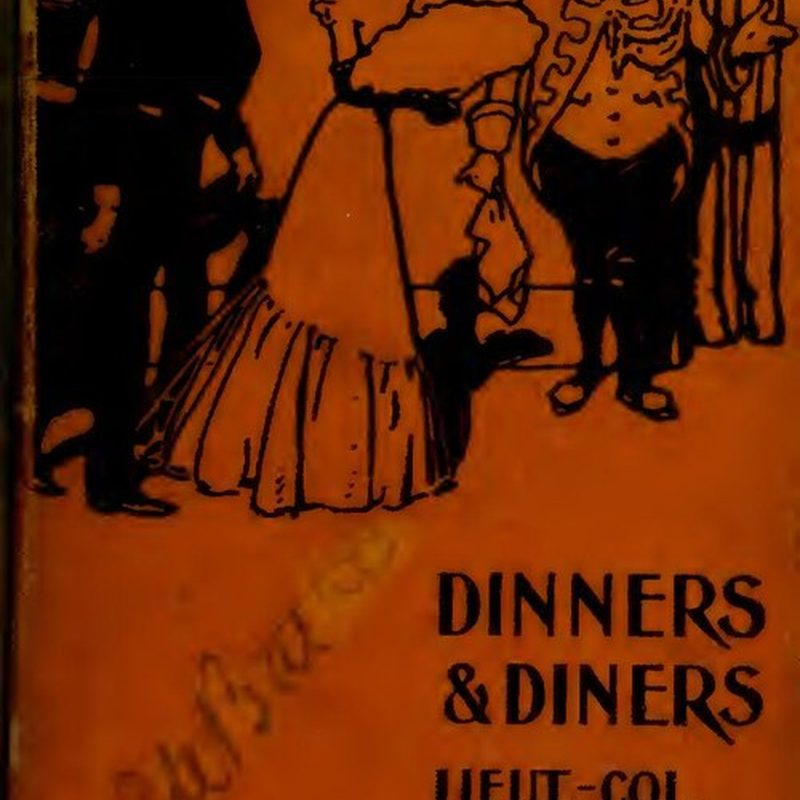
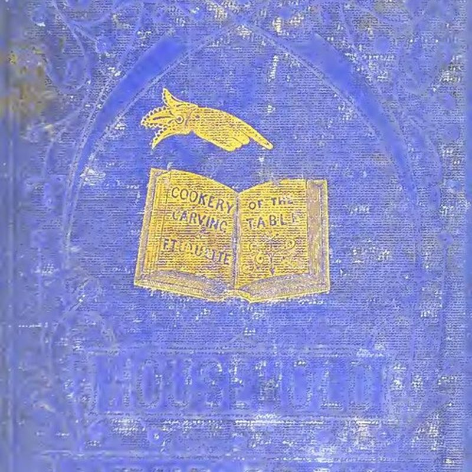
The Mercer Street Twilight Salon
Located at 181 Mercer Street in New York City, our twilight dining salon offers intimate evening seatings limited to twenty-four guests per service.
Here, the kitchen and dining room operate as a synchronized performance. Guests arrive as the sun dips below the Manhattan skyline, enjoying tailored botanical aperitifs before settling into an unhurried, three-hour tasting journey.
Evening Service Hours:
First Sunset Seating: 5:45 PM – 8:15 PM EST
Second Twilight Seating: 8:45 PM – 11:30 PM EST
Reservations Required
The Twilight Plating Gallery
A curated glimpse into our candlelit dishes, seasonal botanical ingredients, and evening courses.
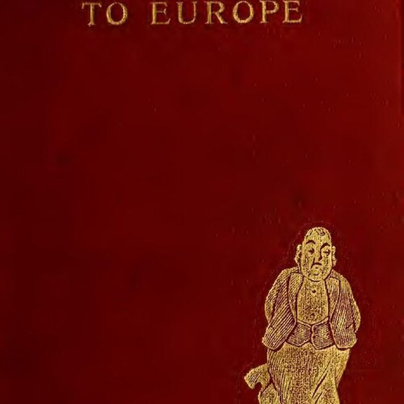
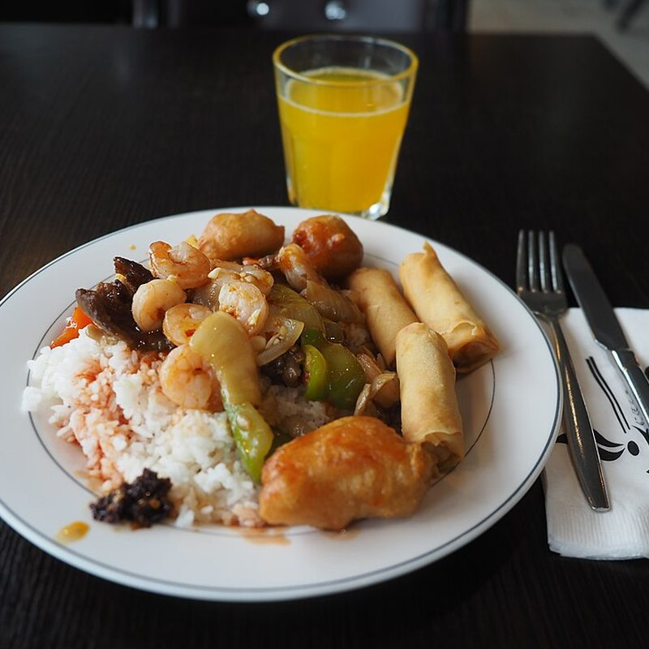
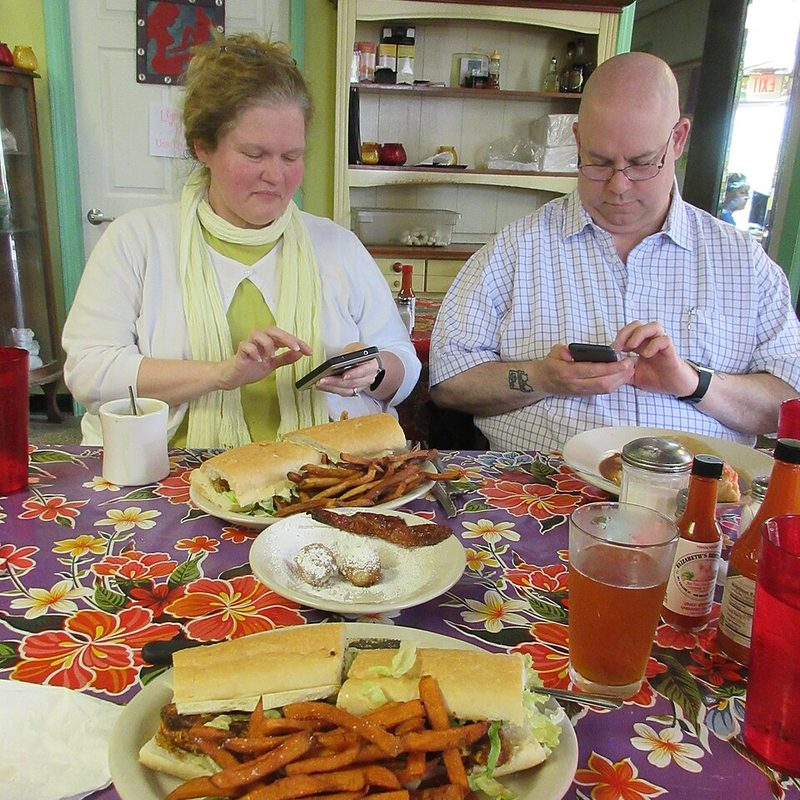
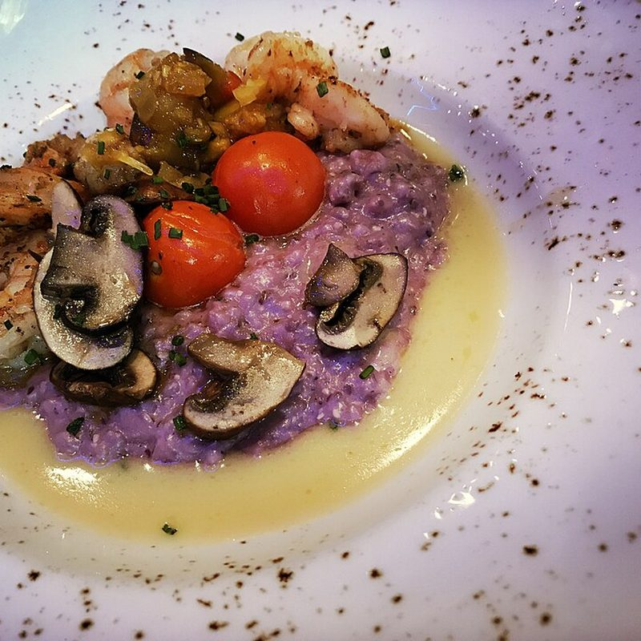
Echoes from the Twilight Table
Reflections from patrons who have experienced our sunset tasting rituals firsthand.
“Dining at TwilightMenu felt like stepping into an intimate European salon. The transition of natural sunset light turning to golden beeswax candles as each course arrived was utterly hypnotic.”
“The botanical pairings were a masterclass. The sparkling cider verjus infused with pine needles and roasted pear elevated the braised short rib course higher than any conventional pairing ever could.”
“You never feel rushed. The spacing between courses, the deep acoustic comfort, and the warmth of the serving platters made our anniversary dinner feel timeless.”
Frequently Asked Dining Questions
Essential information regarding reservations, dietary accommodations, and our sunset seating rhythm.
Reserve Your Seat at the Sunset Table
Step off the vibrant cobblestones of SoHo into an unhurried twilight sanctuary where dining is restored to an art form.